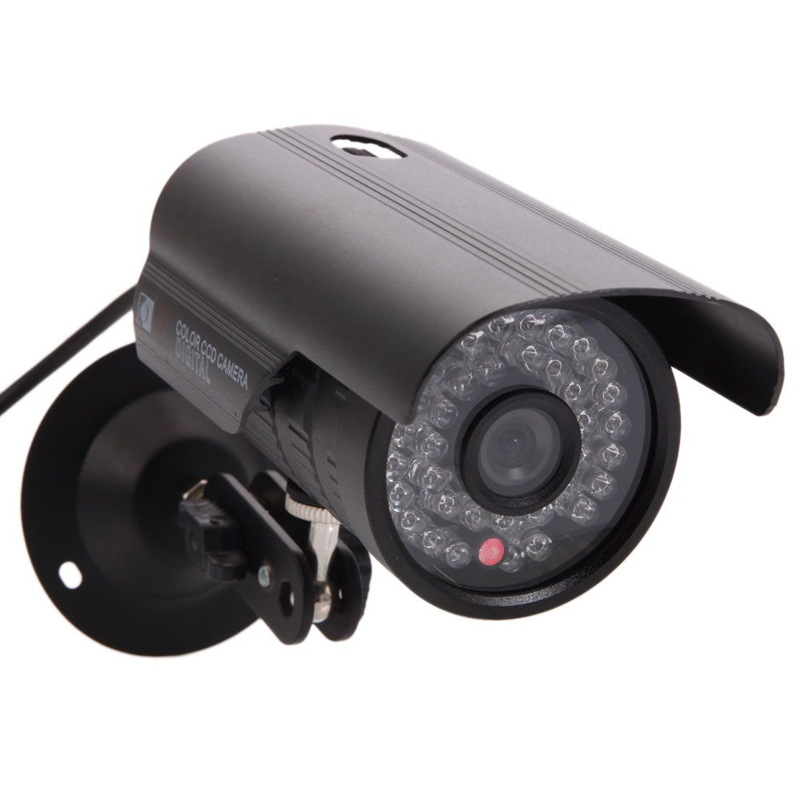

Kamera CCTV Jadi Komponen Penting Ungkap Kasus Kriminalitas
Kriminalitas dewasa ini semakin menjadi-jadi. Berbagai macam modus operan di dilakukan oleh pelaku kejahatan untuk melakukan korbannya, mulai dari tindak pencabulan, pencurian, perampokan atau begal. Dalam melaksanakan aksinya para pelaku pun tidak mengenal tempat dan waktu, tak perduli siapa dan bagaimana nasib orang yang menjadi korbannya.
Hal inilah yang mendasari pentingnya sebuah kamera CCTV.
Terekam CCTV Aksi Kejam Gadis 18 Tahun Lempar Bayi dari Lantai 3 Usai Diracun Pakai Detergen!
Memang kamera CCTV fungsinya bukan untuk melakukan pencegahan tindak kriminal. Namun berbagai kasus dapat diungkap melalui bantuan rekaman CCTV. Hal ini seturut dengan apa yang disampaikan Kapolsek Mergangsan, Kompol Tri Wibowo yang ditemui Tribunjogja.com usai melakukan konferensi pers terkait curanmor dan pencurian kotak infaq, Senin (12/8/2019). Pada kesempatan itu, Kompol Tri Wibowo menyampaikan bahwa masyarakat memang perlu memasang CCTV. "Masyarakat pada umumnya, terlebih lagi para pelaku usaha kos, sebaiknya memasang CCTV. Itu dapat membantu mengungkap kasus kriminal jika ada kejadian," tuturnya.
Viral Video Begal Beraksi Terekam CCTV Berdurasi 30 Detik
Selain itu dia juga menambahkan bahwa beberapa kasus di Mapolsek Mergangsan dapat terungkap karena adanya CCTV. "Masih ingat kejadian tindak asusila terhadap wisatawan asing, itu dapat diungkap melalui CCTV," tegasnya. "Pencurian kotak infaq kemarin (Kamis) juga diungkap lewat CCTV, malah warga juga turun tangan langsung mengamankan pelaku," imbuhnya. Menurut Kompol Tri Wibowo, semakin banyak warga masyarakat yang memiliki CCTV dan semakin banyak kasus yang dapat terungkap melalui CCTV, akan dapat meningkatkan tingkat keamanan disebuah daerah. "Kalo pelaku kejahatan dapat ditangkap dengan bantuan CCTV, pasti pelaku lain yang masih berkeliaran akan merasakan takut. Tingkat keamanan pun pasti akan meningkat," pungkasnya. (TRIBUNJOGJA.COM)